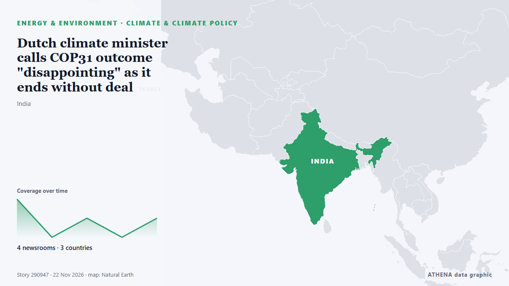

Énergie, ressources et environnement
SponsoriséPrésenté par  Cybernetics and Artificial Intelligence Lab Welcome to the Cybernetics and Artificial Intelligence Laboratory, established at the Department of Business Administration of the National and Kapodistrian University of Athens. The lab is headed by Professor Dimitrios Thomakos. The lab aims to do research that can be published in top venues. Our research uses tools and methods of Artificial Intelligence, and lies in the following areas: - Forecasting - Decision making - Cyber security - Finance We are always looking forward to collaborating with exceptional students!
Cybernetics and Artificial Intelligence Lab Welcome to the Cybernetics and Artificial Intelligence Laboratory, established at the Department of Business Administration of the National and Kapodistrian University of Athens. The lab is headed by Professor Dimitrios Thomakos. The lab aims to do research that can be published in top venues. Our research uses tools and methods of Artificial Intelligence, and lies in the following areas: - Forecasting - Decision making - Cyber security - Finance We are always looking forward to collaborating with exceptional students!
Les titres sont affichés en anglais, tels que publiés.

Climat et politique climatiqueDutch climate minister calls COP31 outcome "disappointing" as it ends without deal
Dutch Climate Minister Stientje van Veldhoven on Sunday called the outcome of the UN climate summit in Antalya, Türkiye, “dissapointing” after participating countries failed to reach an agreement. de NL Times
| 9 nov. | 110 |
|---|---|
| 10 nov. | 110 |
| 11 nov. | 115 |
| 12 nov. | 90 |
| 13 nov. | 74 |
| 14 nov. | 42 |
| 15 nov. | 51 |
| 16 nov. | 108 |
| 17 nov. | 87 |
| 18 nov. | 84 |
| 19 nov. | 79 |
| 20 nov. | 45 |
| 21 nov. | 35 |
| 22 nov. | 21 |
Pacific climate demands face resistance at COP31
COP31 negotiations have entered a critical second week after Australia’s Minister for Climate Change and Energy, Chris Bowen, presented the first draft of a presidency-led cover decision, setting out… de Post-Courier (PNG)
Boca beats Brazil’s Atlético Mineiro to win 2026 Copa Sudamericana
The Copa Sudamericana final is Saturday, Nov. de The Rio Times
UN chief blames fossil fuel interests for climate inaction as COP31 ends without consensus
In a statement issued fafterthe conference, concluded Mr Guterres expressed disappointment owiththe outcome, warning that the failure to secure an agreement came at a time when rising global… de Premium Times
Water bill shock risk looms from Brisbane 2032 build
Urban Utilities has flagged almost $300 million in Olympic precinct water works, warning households could bear the cost if state funding fails to eventuate. de Sydney Morning Herald
EU officials reject Cop31 deal as it 'doesn't speak to reality of the climate crisis' – video
The Cop31 climate talks fell into disarray as the EU, UK and allies in the developing world rejected what they called an unacceptable deal on the future of the climate. de Guardian Environment
Russian attacks cause power outages in five Ukrainian oblasts
As of the morning of 22 November, consumers in Odesa, Dnipropetrovsk, Zhytomyr, Rivne and Kharkiv oblasts remain without electricity after Russian strikes damaged energy facilities, forcing Odesa… de Ukrainska Pravda (English)
Russia strikes gas service facility in Dnipropetrovsk region with guided bomb, several injured
Russian forces attacked a gas service facility in the Dnipropetrovsk region with an aerial bomb on Sunday, November 22. de Ukrinform (English)
COP31 climate talks on the brink as new draft deal faces scrutiny
New draft would acknowledge for the first time that global warming is on course to pass the 1.5C threshold. de Al Jazeera English
Fossil Fuels Missing In New COP31 Draft Deal, Tensions Remain Unresolved
Fossil fuels are a flashpoint at the climate talks and the summit comes against a difficult backdrop of soaring energy prices and geopolitical tensions stemming from the war in Iran. de NDTV World
Heavy rain on way for parts of UK
The alert will be in effect for parts of the South West from 6am and remain in place the entire day. de Evening Standard (London)
COP31 climate deal in the balance after fractious talks
Ten years after the Paris Agreement took effect, its durability faces another test. de Khmer Times
Forum Chair backs Australia’s COP31 role as Albanese defends conference spending
Australian Prime Minister Anthony Albanese has defended the cost of hosting and participating in COP31, saying climate action is a matter of Australia's national interest, regional security and its… de Post-Courier (PNG)
Chow accuses Guan Eng of misleading public over Penang-Perak water deal
GEORGE TOWN: Chief Minister Chow Kon Yeow has rebuked Bagan member of parliament Lim Guan Eng for misleading the public over the Perak-Penang Bulk Water Supply Agreement (BWSA). de New Straits Times
Wife of firefighter missing in Nepal harassed by debt collectors
KUALA LUMPUR: The wife of a senior fire officer reported missing in Nepal has spoken of the distress caused by repeated calls and threats from parties seeking to recover her husband's debts. de New Straits Times
Magnitude 4.5 earthquake strikes 20km north-east of Hanmer Springs
GeoNet had received 186 felt reports by 9.25pm, including one reporting extreme shaking and another reporting strong shaking. de Stuff
Former Uber driver ‘who hated the rich’ guilty of starting deadly LA fire
Jonathan Rinderknecht was “mad at everything and frustrated” before he started a blaze that destroyed almost 7000 homes, a California court hears. de Sydney Morning Herald
Libya loses $30.8 million as armed group blocks oil pipeline for over 20 days
Libya has suffered a loss of $30.8 million in oil revenue after an armed group blocked the Hamada oil pipeline for more than 20 days, halting the transport of over 302,000 barrels of crude oil. de Arab News
Oil prices exceed $92 on global commodity markets
Retail fuel prices in Cambodia fell again yesterday following a decline in international oil markets, according to the Ministry of Commerce. de Khmer Times
Port of Los Angeles Releases Environmental Impact Draft for Proposed Terminal Improvements
The Port of Los Angeles has released a Draft Environmental Impact Report (DEIR) for a proposed Marine Oil Terminal and Wharf Improvements Project, located at Berths 148-151 in Wilmington… de Maritime Professional
6.7 magnitude earthquake hits central Peru
LIMA, Peru (AFP)—A 6.7-magnitude earthquake struck central Peru on Friday, the Peruvian Geophysical Institute reported, with a preliminary report indicating no fatalities or serious damage from the… de Jamaica Observer
What US mining firm plans to do before mining Kenya’s Ksh8T Mrima Hill minerals
The US-led consortium selected by the Kenyan government to negotiate prospecting rights for the Mrima Hill rare earth and niobium deposits has unveiled a 36-month programme outlining what it plans to… de People Daily
Fight over fossil fuels leaves COP31 climate talks in deadlock
Countries from nearly 200 countries are in a deadlock to try and get a new global climate agreement. de BBC News
Court stay prevents US Army from detonating bomb-making chemicals in Iowa
DES MOINES, Iowa (AP) — A federal appeals court has granted a request by environmentalists to put on hold a permit that cleared the way for the U.S. de The Canadian Press (via CityNews)
Nyanzaga Mine strikes gold at TMIC 2026 as it readies for its production
DAR ES SALAAM: AFTER 17 years of exploration and construction, the Nyanzaga Gold Project has participated in the Seventh Tanzania Mining and Investment Conference (TMIC 2026) as a new investor… de Daily News
Iraq reopens key road linking Jurf al-Nasr to Karbala
Road reopens a day after Iraqi forces begin redeployment in Jurf al-Nasr amid security measures and investigations into suspected oil smuggling. de Anadolu Agency (English)
Countries race to secure COP31 deal after fossil fuel row
The COP31 climate talks have extended into Saturday as nations struggle to agree on a deal following the removal of fossil fuel references from draft texts, highlighting significant disagreements. de Arab News
Pashinyan outlines next steps in TRIPP project implementation
The launch of the TRIPP project will be officially announced on November 22, Armenian Prime Minister Nikol Pashinyan said at the DigiTec 2026 forum in Yerevan. de AzerNews
World Fisheries Day highlights importance of sustainable Fishing and Fisherfolk livelihoods
By Zoila Palma: World Fisheries Day is being observed with renewed calls for responsible fishing practices, sustainable management of aquatic resources and improved working conditions for people… de Breaking Belize News
UN launches Disaster Risk Financing Platform at COP31 to make humanitarian responses faster and more predictable
The initiative aims to secure access to more than US$3 billion in risk financing to protect 75 million people from climate shocks by 2030. de UNICEF
Samsung Heavy and Tesser Atomics team up on nuclear-powered LNG carrier
South Korean shipbuilding giant Samsung Heavy Industries and US nuclear tech firm Tesser Atomics have entered into an exclusive strategic collaboration on a demonstration project for a… de LNG Prime
Saudi Arabia Agrees to Store Additional 16 Million Barrels of Crude in Japan
ISTANBUL: Japan has agreed to buy up to 8 million barrels of Saudi crude for its national petroleum reserve if market conditions are favourable, the two countries said Friday, Anadolu Ajansi… de New Straits Times
Peru and Japan agree to strengthen El Niño preparedness and promote investment
Peru and Japan signed nine cooperation agreements aimed at strengthening the prevention and mitigation of the effects of the El Niño phenomenon, promoting new investments, expanding cooperation in… de Andina (English)
India 16 without loss in reply to New Zealand’s 368 in first test
New Zealand all-rounder Glenn Phillips secured his second test century with three runs. de SABC News
U.S. Holds Historic Deep-Sea Mining Lease Sale
The Trump administration on Thursday completed the first-ever U.S. offshore critical minerals lease auction, drawing $6 million in high bids for more than 31.5 million acres of seabed off American... de gCaptain